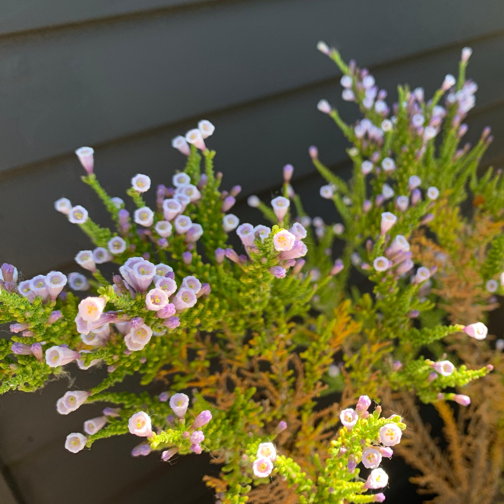
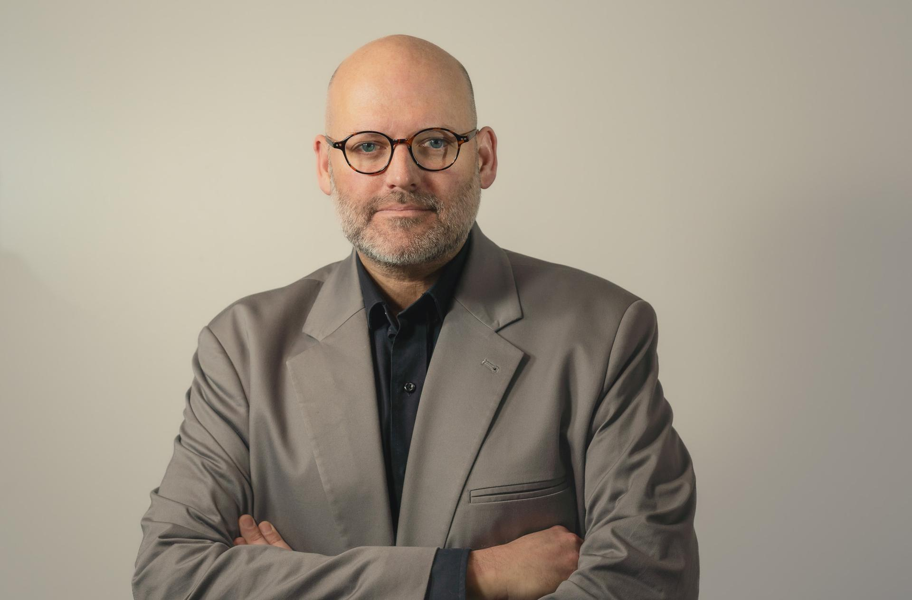

ABOUT
DRIFT is a landscape architecture studio based in Portland, Oregon, founded by landscape architect Tim Strand. The practice works across scales and project types, from private residential landscapes to parks, campuses, civic spaces and complex public infrastructure.

APPROACH
DRIFT approaches landscape as an integral part of architecture and place—not as something applied after the fact. The landscape can ground a building, connect it to its surroundings, and create experiences architecture cannot provide on its own.
The work favors restraint, clarity and carefully considered detail. Simple gestures can be powerful. Unexpected ones can invite attention, curiosity and refl ection.
Planting brings another dimension: movement, fragrance, texture, seasonal change and time. Rather than relying on familiar formulas, DRIFT seeks plant communities that respond to climate and context while expanding expectations of what a Pacific Northwest landscape can be.
CHANGE
Landscape is never finished. Plants mature and migrate. Materials weather. Seasons transform a place. People use spaces in ways that can't always be anticipated
Design establishes a framework for that change—balancing intention and control with the understanding that landscapes will continue evolving long after they are built.
LANDSCAPE + PEOPLE
Landscape can offer refuge, restoration, connection and delight—from a private garden shared with family and friends to a park, campus, healthcare environment or civic space. These experiences can soften the ordinary diffi culties of daily life and provide moments of respite during much more profound ones.
In the public realm, landscape architecture carries an additional responsibility to expand access to nature, beauty and meaningful open space. Thoughtful design should welcome people with different backgrounds, abilities and experiences and contribute positively to the communities it serves.
STUDIO

Tim Strand, PLA, ASLA
Principal + Owner
Tim Strand founded DRIFT after more than two decades of professional landscape architecture practice in Portland and the Bay Area. His experience ranges from residential landscapes and parks to higher education, healthcare, airports, transportation + infrastructure, adaptive reuse and landscape on structure.
Tim holds a Master of Landscape Architecture from the University of California, Berkeley and a B.S. in Natural Resources and Environment from the University of Michigan. He is a registered landscape architect in Oregon.
DRIFT is a COBID-certified Emerging Small Business (ESB #15972) and holds professional licensure in the State of Oregon, with reciprocity available in additional states.